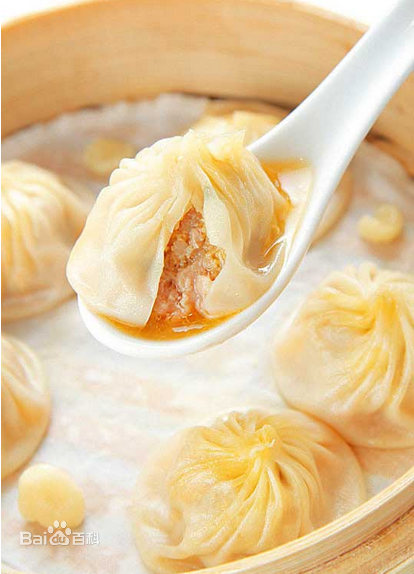
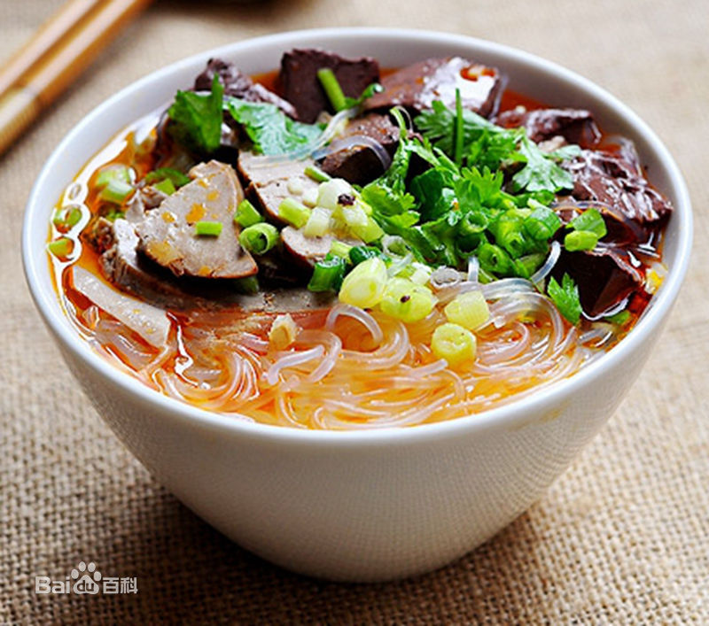
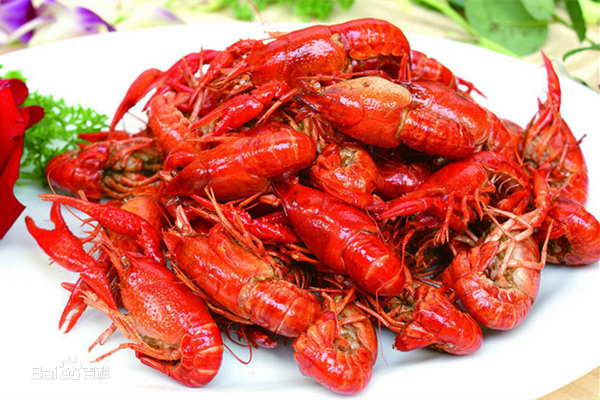

-

小笼包，别称小笼馒头，在苏南、上海、浙江一带习惯叫做小笼馒头，四川叫做小笼包子，一个蒸笼里有10个包子，10个包子为一笼，它源于北宋京城开封的灌汤包，南宋时在江南承传、发展和演变而成。小笼包是常州、无锡、上海、南京、杭州、嘉兴、芜湖、徽州、嵊州等江南地区著名的传统小吃。
-

鸭血粉丝汤是南京的特色名吃，属金陵菜、金陵小吃，是金陵菜和金陵小吃中重要的代表，是久负盛名以鸭为特色的美食之一。鸭血粉丝汤由鸭血、鸭肠、鸭肝等加入鸭汤和粉丝制成。以其口味平和，鲜香爽滑的特点，以及南北皆宜的口味特色，风靡于全国各地。
-

口味虾，又名麻辣小龙虾、长沙口味虾、香辣小龙虾等，是湖南省著名的传统小吃，以小龙虾制成，口味辣鲜香，色泽红亮，质地滑嫩，滋味香辣。